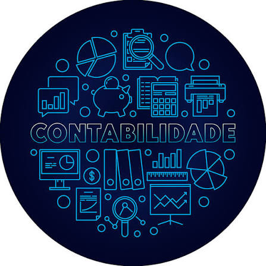

Consultoria Empresarial
Diagnóstico e orientação estratégica para organizar processos e apoiar as decisões do seu negócio.
Sob consulta
Solicitar →
Consultoria empresarial sólida para empresas de todos os portes, com foco em contabilidade, gestão tributária, auditoria e soluções empresariais.
Sou Felipe José Dias da Silva, Contador com registro ativo no CRC, graduado em Ciências Contábeis e em Administração de Empresas pela UNIFEOB, e MBA em Controladoria e Finanças pela UNINTER.
Ao longo de mais de 15 anos, atuei em empresas nacionais e multinacionais de grande porte — como KPMG Auditores Independentes, Grupo Curimbaba, Schweitzer Engineering Laboratories e Grupo Fer-Alvarez — nas áreas de auditoria, controladoria, contabilidade, fiscal e finanças.
A FS Consultoria Empresarial nasceu para colocar essa experiência a serviço de empresas de todos os portes, com uma consultoria próxima, sóbria e orientada a resultados.
Todos os serviços são personalizados conforme a necessidade da sua empresa. Valores sob consulta.
Diagnóstico e orientação estratégica para organizar processos e apoiar as decisões do seu negócio.
Análise da carga tributária e identificação de oportunidades de economia dentro da legislação vigente.

Acompanhamento contábil especializado, com orientação para o cumprimento de obrigações fiscais e legais.
Escrituração contábil completa, com relatórios claros para apoiar a gestão do dia a dia da empresa.
Avaliação de processos e controles internos, com base em normas e práticas contábeis nacionais e internacionais.
Apoio no planejamento financeiro e na análise de resultados para decisões mais seguras.
Estruturação de relatórios gerenciais e indicadores para acompanhar o desempenho da empresa.
Suporte personalizado para desafios específicos de gestão, fiscais e administrativos.
Capacitação de equipes em temas contábeis, fiscais e de gestão, sob medida para a sua empresa.
Atendimento presencial (horário comercial) e on-line, com pagamento em até 12 vezes. Fale agora com a FS Consultoria Empresarial.
O primeiro passo é um diagnóstico do regime tributário atual e das operações da empresa, para identificar, dentro da legislação vigente, oportunidades de enquadramento e planejamento tributário mais adequadas ao seu negócio.
Sim. A consultoria empresarial inclui apoio na definição de estrutura societária, processos internos e organização administrativa, de acordo com o estágio e os objetivos da empresa.
A redução de custos passa por um levantamento detalhado das despesas e processos da empresa, com análise de controladoria para identificar desperdícios e oportunidades de otimização, sem comprometer a operação.
Sim. O trabalho de auditoria e consultoria inclui a avaliação de controles internos e práticas de compliance, alinhando a empresa às normas e obrigações legais aplicáveis.
A mitigação de riscos começa com a revisão dos processos contábeis, fiscais e financeiros da empresa, seguida da implementação de controles e do acompanhamento periódico dos indicadores.
Sim, a consultoria oferece apoio na organização de processos internos, relatórios gerenciais e rotinas administrativas, trazendo mais clareza para a tomada de decisão.
Atendimento presencial (horário comercial) e on-line. Entre em contato pelo WhatsApp, e-mail ou pelo formulário ao lado.